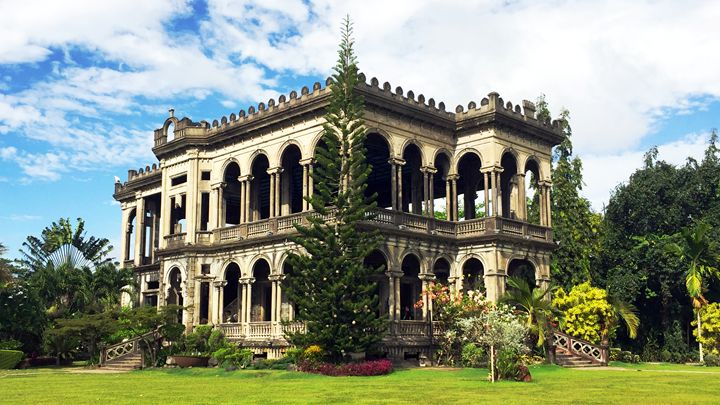
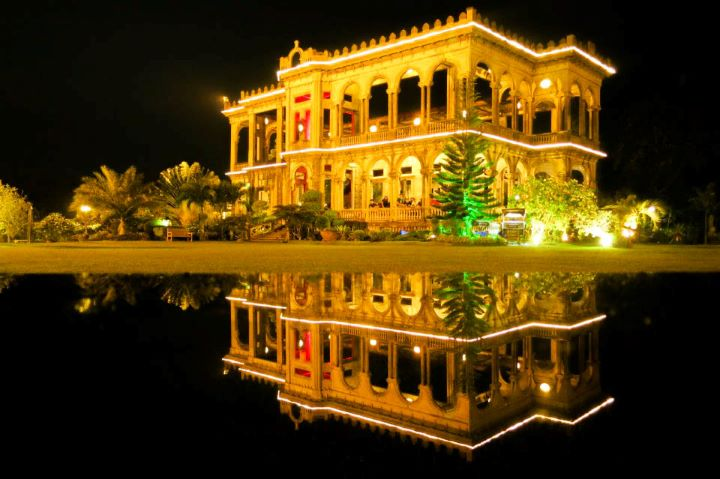

Welcome to The Ruins
The Ruins in Bacolod, Philippines, is a magnificent remains of a once-grand mansion, often referred to as the "Taj Mahal of Negros." It was built in the early 1900s by sugar baron Don Mariano Ledesma Lacson in memory of his wife, Maria Braga. The structure, made of Italian-inspired architecture, features towering pillars, intricate details, and a romantic atmosphere, especially during sunset when the mansion glows in golden hues. Though it was burned down during World War II, its skeletal beauty continues to attract visitors as an iconic historical landmark.
 